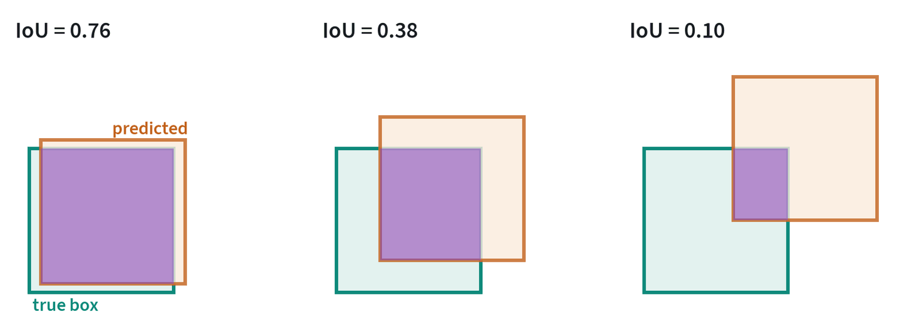

Why explicit perception still matters
An end-to-end policy takes pixels in and sends actions out, and it learns whatever perception it needs along the way. That has not made explicit perception obsolete. Systems still need to name objects, measure distances and build maps, for four reasons: to label data, to check whether a task succeeded, to monitor safety, and to plan routes and grasps where a learned policy is not trusted to.
From pixels to things

| Task | Output | Used for |
|---|---|---|
| Detection | A box and a label for each object | Counting, finding what to pick |
| Segmentation | The exact pixels of each object | Grasp planning, masking, success checks |
| Tracking | The same object followed across frames | Following moving items, video labelling |
| Pose estimation | An object’s position and orientation in 3D | Precise placement and insertion |
The important change of recent years is open vocabulary. Older detectors knew a fixed list of classes. Current ones take a text prompt and find things they were never trained to name, and segmentation models accept a box or a click as the prompt. A new object no longer needs a new labelled dataset.
They are not reliable everywhere. On another frame from the same dataset, the same detector labelled the robot’s gripper as a moka pot with fair confidence. Unusual views and simulated images are where to check.
How detections are scored


A predicted box is compared with the true one by intersection over union:
It is a demanding measure. In the middle panel the predicted box is shifted by less than a third of its width and the score is already 0.38. A detection counts as correct when its IoU with a true box exceeds a threshold, commonly 0.5.
A detector outputs a confidence with each box, and lowering the confidence threshold trades precision for recall. Average precision summarises the whole trade-off as the area under the precision-recall curve, and mAP is its mean over classes. The common benchmark figure averages that again over IoU thresholds from 0.5 to 0.95, which rewards boxes that are tight as well as present.
Older detectors proposed many overlapping boxes per object and removed the duplicates with non-maximum suppression: keep the most confident box, delete every box that overlaps it by more than a threshold, and repeat. Transformer detectors predict a fixed set of boxes and are trained with a one-to-one matching between predictions and true objects, so they need no such step. For masks the same overlap measure is applied to pixels.
Depth and point clouds
Depth turns an image into geometry. It comes from a sensor (two cameras, projected light, or lidar) or from a model that estimates it from one image. Models that predict relative depth give the ordering of near and far. Metric models estimate actual distances.

Given depth and the camera intrinsics, each pixel becomes a 3D point, and the image becomes a point cloud. The figure is honest about the limits: shapes are plausible, edges smear, and the scale is an estimate. Depth sensors have their own failures on shiny, dark and transparent objects. The fundamentals note covers the camera model used here.
The geometry underneath
Three pieces of geometry turn perception into something a robot can act on.
Back-projection. A pixel with depth and camera intrinsics becomes a 3D point in the camera frame:
This is how the point cloud above was made. Applying the camera’s pose then moves the point into the robot’s base frame.
Pose from correspondences. Given several known 3D points on an object and where they appear in the image, the object’s pose is the one that minimises the reprojection error, with the camera projection:
This is the perspective-n-point problem. Four points determine the pose, and more make it robust to noise.
Registration. To align two point clouds, the iterative closest point method alternates two steps until it converges: match each point to its nearest neighbour in the other cloud, then solve for the rigid transform that best aligns the matched pairs, , which has a closed-form solution. It needs a reasonable starting guess, which is usually what a learned pose estimator provides.
Object pose and grasping
Many industrial tasks reduce to knowing a part’s pose precisely. A 6D pose is three numbers of position and three of orientation. Methods either match the image against a known 3D model of the part or, more recently, estimate the pose of objects never seen before from a few reference views. Grasp detectors take a point cloud and propose gripper poses directly.
This pipeline, perceive, estimate pose, plan, move, is the classical alternative to a learned policy. It is precise and easy to inspect when parts are rigid and known. It struggles with clutter, deformable items and anything it has no model for.
Maps and navigation

A mobile robot has to know where it is and what is around it. SLAM, simultaneous localisation and mapping, builds the map and tracks the robot’s position in it at once. The simplest map is an occupancy grid: free cells and occupied cells. A planner then searches it for a path.
Newer maps store meaning as well as geometry. Attaching language-aligned features to each place lets a robot act on “go to the kitchen” without anyone marking the kitchen.
Learned 3D scenes
Neural radiance fields and 3D Gaussian splatting build a 3D model of a scene from ordinary photos taken from known positions, and can then render it from any viewpoint. In robotics they are used to turn a real workspace into a simulated one, to generate new camera views of existing demonstrations, and to check a planned motion against the real geometry.
Modular or end-to-end
| Modular pipeline | End-to-end policy | |
|---|---|---|
| How it works | Perceive, estimate, plan, then move | Pixels in, actions out |
| Strengths | Each stage can be tested and explained; precise with known objects | Handles clutter, deformables and tasks that are hard to specify |
| Weak points | Errors pass down the chain; every stage needs engineering | Needs demonstrations; failures are harder to diagnose |
| Common today | Industrial pick-and-place, navigation | Household and general manipulation |
Most deployed systems mix the two: a learned policy for the manipulation itself, with explicit perception around it for safety, success checks and navigation.
Common mistakes
- Trusting a confidence score. Detectors are overconfident on images unlike their training data. Check on your own scenes.
- Forgetting calibration. A perfect detection in the camera frame is useless with a wrong camera pose.
- Expecting depth on glass and metal. Test the actual objects, not a matte stand-in.
Terms
- Open vocabulary
- Able to find or name things described in text, beyond a fixed list of classes.
- Segmentation mask
- The set of pixels that belong to one object.
- Point cloud
- A set of 3D points, usually one per pixel with a depth value.
- 6D pose
- An object’s 3D position and 3D orientation.
- SLAM
- Building a map while tracking the robot’s position in it.
- Occupancy grid
- A map made of cells marked free or occupied.
- Intersection over union
- The area two regions share divided by the area they cover together.
- Mean average precision
- The area under the precision-recall curve, averaged over classes.
- Back-projection
- Turning a pixel and its depth into a 3D point using the camera’s intrinsics.
- Registration
- Finding the rigid transform that aligns two sets of 3D points.
In my work
Further reading
- Liu et al., 2023. Grounding DINO: Marrying DINO with Grounded Pre-Training for Open-Set Object Detection.
- Ravi et al., 2024. SAM 2: Segment Anything in Images and Videos.
- Yang et al., 2024. Depth Anything V2.
- Wen et al., 2023. FoundationPose: Unified 6D Pose Estimation and Tracking of Novel Objects.
- Kerbl et al., 2023. 3D Gaussian Splatting for Real-Time Radiance Field Rendering.
- Carion et al., 2020. End-to-End Object Detection with Transformers (DETR).
- He et al., 2017. Mask R-CNN.